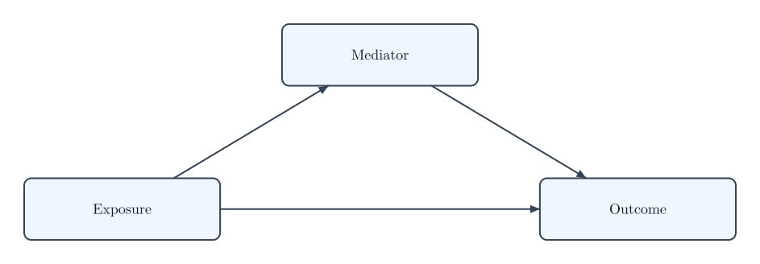
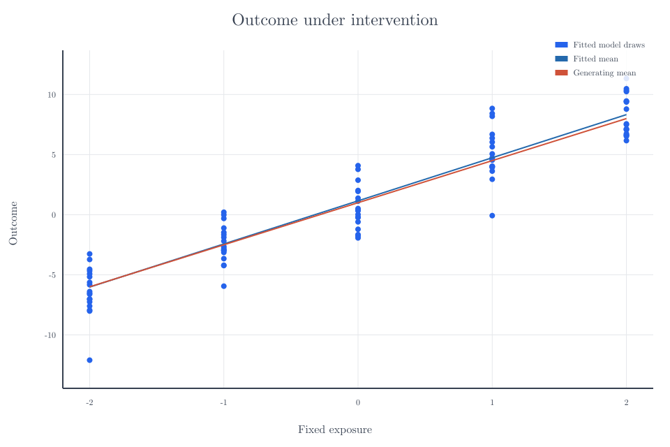

Linear structural equations and interventions
Abstract
Fit an observed-variable Gaussian path model with a direct exposure effect and a mediated path. Use it to simulate interventions, calculate implied moments and predict an intervention for a unit whose outcomes were observed.
Specify the direct and mediated paths
#include <dm/dm.hpp>
int main() {
std::filesystem::create_directories("build");
const datamunge::causal::DAG graph(3, {{0, 1}, {1, 2}, {0, 2}});
graph.diagram({{0, 0}, {5, 3}, {10, 0}}, {"Exposure", "Mediator", "Outcome"})
.save_svg("build/mediation_dag.svg");
}
Compare fitted intervention means to simulated draws
#include <dm/dm.hpp>
namespace dm = datamunge;
int main() {
const dm::causal::DAG graph(3, {{0, 1}, {0, 2}, {1, 2}});
dm::linalg::DenseMatrix<double> data(600, 3);
std::mt19937_64 rng(77);
std::normal_distribution<double> normal;
for (std::size_t i = 0; i < data.rows(); ++i) {
data(i, 0) = normal(rng);
data(i, 1) = 1.5 * data(i, 0) + normal(rng);
data(i, 2) = 1 + .5 * data(i, 0) + 2 * data(i, 1) + normal(rng);
}
const auto fit = dm::causal::fit_linear_sem(graph, data);
const auto factual = std::vector<double>{data(0, 0), data(0, 1), data(0, 2)};
const auto changed = fit.counterfactual(factual, {{0, factual[0] + 1}});
std::cout << "Fitted direct path " << fit.coefficients()(2, 0) << ", total effect "
<< fit.total_effect(0, 2) << ", first unit's outcome shift "
<< changed[2] - factual[2] << ".\n";
const std::vector<double> x{-2, -1, 0, 1, 2};
std::vector<double> fitted, observed_x, observed_y, generating;
for (std::size_t j = 0; j < x.size(); ++j) {
fitted.push_back(fit.moments({{0, x[j]}}).mean[2]);
generating.push_back(1 + 3.5 * x[j]);
const auto draws = fit.sample(18, 550 + j, {{0, x[j]}});
for (std::size_t i = 0; i < draws.rows(); ++i) {
observed_x.push_back(draws(i, 0));
observed_y.push_back(draws(i, 2));
}
}
std::filesystem::create_directories("build");
dm::graphics::RPlot::create().points(observed_x, observed_y, "Fitted model draws")
.lines(x, fitted, "Fitted mean", {36, 105, 172})
.lines(x, generating, "Generating mean", {207, 82, 57})
.title("Outcome under intervention").x_label("Fixed exposure").y_label("Outcome")
.save_svg("build/linear_sem.svg");
}Fitted direct path 0.537956, total effect 3.5865, first unit's outcome shift 3.5865.

The generating total effect is 3.5, from the direct slope 0.5 and the mediated effect 1.5 times 2. An intervention replaces the exposure equation. A unit counterfactual additionally keeps that unit's inferred disturbances fixed. This example uses a supplied acyclic graph, observed variables and independent Gaussian disturbances.